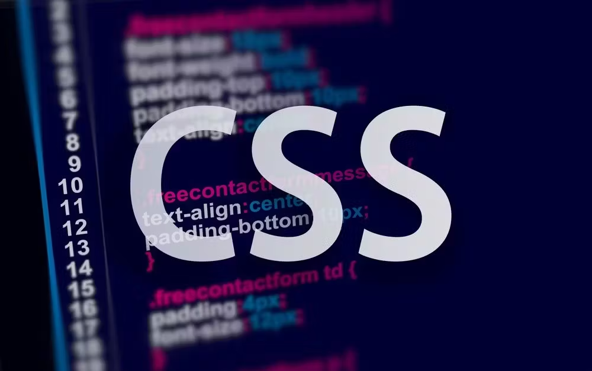

Curva de aprendizaje
Curva de aprendizaje Especificidad y herencia
Especificidad y herencia
|
Curva de aprendizaje |
Compatibilidad entre navegadores |
Especificidad y herencia |
|---|---|---|
| Puede ser dificil para principiantes dominar todas las propiedades, selectores y conceptos avanzados. | Los estilos pueden interpretarse de manera diferente en varios navegadores, lo que exige pruebas y ajustes. | La jerarquía de reglas de CSS puede generar resultados inesperados, requiriendo una compresión precisa de cómo funcionan. |
|  Limitaciones en la maquetación |
|---|
| Algunos diseños complejos pueden necesitar técnicas avanzadas adicionales para lograrse. |
Licenciatura en Sistemas Computacionales© Copyright 2022. Luis Felipe Gutierrez Lopez |